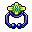

Classes
Aos 9 você escolhe a classe base; aos 40, a avançada. Todas começam em Argent City.
| Classe | Personagens | Arma | Sozinho | Cura própria |
|---|---|---|---|---|
| Crusader | Lance, Phyllis | Duas espadas | Bom | Não |
| Champion | Carsise | Espadão | Fraco no começo, forte no fim | Não |
| Sharpshooter | Lance, Phyllis | Arma de fogo | Muito bom para farmar; frágil | Não |
| Cleric | Phyllis, Ami | Cajado | Lento no começo, muito forte no fim | Sim |
| Seal Master | Phyllis, Ami | Cajado | Difícil (é suporte) | Sim |
| Voyager | Lance, Phyllis, Ami | Adaga | Ótimo no meio do jogo; o mais forte no mar | Não |
Para jogar sozinho: Cleric (se cura e aguenta), Sharpshooter (farma rápido) ou Crusader (equilibrado). Seal Master é o mais difícil sozinho.
- Personagens
- Lance, Phyllis
- Arma
- Duas espadas
- Atributos
- AGI só até velocidade de ataque 210 (~76 de AGI com duas espadas e Blood Frenzy 10, contando equipamento e gemas), o resto em STR
- Sozinho
- Bom
- Cura própria
- Não (comida + fada Recover)
Como chegar lá
- Nível 9 — Swordsman. Com nível 9, a Newbie Guide - Senna 2223, 2785 em Argent dá a carta; leve ao Castle Guard - Peter 2192, 2767.
- Nível 40 — Crusader. No nível 40, com o Peter: 5 Greasy Lizard Skin (Thickskin Lizard, Forest 10B 732, 2697), matar 10 Skeletal Warrior e juntar 3 Warrior Certificate (Upper Icicle 2A 2266, 470) e comprar 1 Breast Plate com a Tailor - Granny Nila 2267, 2704.
Habilidades
Swordsman: Illusion Slash no máximo (fecha lá pelo 24), Berserk 5, Sword Mastery 3, Concentration 2. Crusader: Blood Frenzy no máximo e Dual Sword Mastery (no 10 a mão esquerda passa de 20% para 100%), depois Deftness. Shadow Slash atordoa.
Armas e armaduras por nível
A melhor peça de cada nível (a Store, aba Crusader, vende todas as da classe). A linha só aparece quando alguma peça muda; entre parênteses, o nível exigido.
Acessórios por nível (capacete, colar, anéis, bracelete)
Anéis de STR (Seal of Strength 40, Hammer of Thunder 50, Peter's Call 60): cada ponto de STR vale ~3 de ataque no meio do jogo, mais que os anéis de ataque fixo. Até o 35 o anel de ataque fixo (Gold, Animal Tusk, Assault, Barbaric) empata ou ganha, porque a STR ainda é baixa. Enquanto a velocidade de ataque não chega a 210, use um dos dois anéis de AGI do mesmo nível (Bandit Scoop 20, May Breeze 30, Spectral Wolf Button 40, Eye of Lightning 50, Kiss of Nic 60) e troque pelo de STR quando bater 210. Colar de velocidade com HP; bracelete de ataque (The Devil's Kiss dá +45 por 1,5 mil do 40 ao 55).
Acessório bom dura muitos níveis. Embaixo de cada peça: o que ela dá e onde comprar. Capacetes na aba Crusader da Store; colares, anéis de atributo e braceletes na aba Jewelry (comum a todas as classes); os anéis de ataque fixo são dos NPCs Accessory. O anel vem em par (são 2 espaços). Do 40 em diante a tabela já é a da classe avançada.
| Nível | Capacete | Colar | Anel (par) | Bracelete |
|---|---|---|---|---|
| 15 | — | Necklace of Vitality (15)+24 HP Store, aba Jewelry · 5.200 | Gold Ring (15)+7 ataque Accessory - Pucan, Ascaron 1889, 2804 | — |
| 20 | — | Pendant of Sunstone (20)+30 HP, +20 velocidade Store, aba Jewelry · 21.000 | Animal Tusk Ring (20)+9 ataque Accessory - Pucan, Ascaron 1889, 2804 | — |
| 25 | — | Pendant of Sunstone (20)+30 HP, +20 velocidade Store, aba Jewelry · 21.000 | Assault Ring (25)+11 ataque cai de Snowy Snail Monarch (nv 19, 15%) | — |
| 30 | — | Nebulous Ray (30)+40 HP, +40 velocidade Store, aba Jewelry · 68.400 |  Ancient Tree Tuber (30)+4 STR, +1 CONStore, aba Jewelry · 44.000 | — |
| 35 | — | Nebulous Ray (30)+40 HP, +40 velocidade Store, aba Jewelry · 68.400 | Barbaric Ring (35)+14 ataque Accessory - Rikka, Ascaron 996, 2969 | — |
| 40 | — | Onslaught (40)+50 HP, +60 velocidade Store, aba Jewelry · 112.000 | Seal of Strength (40)+6 STR, +2 CON Store, aba Jewelry · 80.600 | The Devil's Kiss (Crusader) (10)+45 ataque Store, aba Jewelry · 1.500 |
| 50 | — | Nimble Venturer (50)+60 HP, +80 velocidade Store, aba Jewelry · 200.500 | Hammer of Thunder (50)+8 STR, +2 CON Store, aba Jewelry · 138.800 | The Devil's Kiss (Crusader) (10)+45 ataque Store, aba Jewelry · 1.500 |
| 55 | Chaos Crownstone (55)+1 STR, +1 AGI, +1 ACC, +1 CON, +1 SPR, +16 defesa, +70 SP Store, aba Crusader · 21.300 | Nimble Venturer (50)+60 HP, +80 velocidade Store, aba Jewelry · 200.500 | Hammer of Thunder (50)+8 STR, +2 CON Store, aba Jewelry · 138.800 | Lv55 Crusader Bracelet (55)+65 ataque, +3 defesa Store, aba Jewelry · 90.200 |
| 60 | Chaos Crownstone (55)+1 STR, +1 AGI, +1 ACC, +1 CON, +1 SPR, +16 defesa, +70 SP Store, aba Crusader · 21.300 | Soul Generator (60)+70 HP, +100 velocidade Store, aba Jewelry · 323.200 | Peter's Call (60)+10 STR, +3 CON Store, aba Jewelry · 236.400 | Lv55 Crusader Bracelet (55)+65 ataque, +3 defesa Store, aba Jewelry · 90.200 |
| 65 | Chaos Crownstone (55)+1 STR, +1 AGI, +1 ACC, +1 CON, +1 SPR, +16 defesa, +70 SP Store, aba Crusader · 21.300 | Soul Generator (60)+70 HP, +100 velocidade Store, aba Jewelry · 323.200 | Peter's Call (60)+10 STR, +3 CON Store, aba Jewelry · 236.400 | Lv65 Crusader Bracelet (65)+80 ataque, +4 defesa Store, aba Jewelry · 134.600 |
| 70 | Artemis Crownstone (70)+2 STR, +2 AGI, +2 ACC, +2 CON, +2 SPR, +10 defesa Store, aba Crusader · 40.800 | Soul Generator (60)+70 HP, +100 velocidade Store, aba Jewelry · 323.200 | Peter's Call (60)+10 STR, +3 CON Store, aba Jewelry · 236.400 | Lv65 Crusader Bracelet (65)+80 ataque, +4 defesa Store, aba Jewelry · 134.600 |
| 75 | Arthurs King Faith (75)+3 STR, +3 AGI, +3 ACC, +3 CON, +3 SPR, +20 defesa Store, aba Crusader · 74.300 | Soul Generator (60)+70 HP, +100 velocidade Store, aba Jewelry · 323.200 | Peter's Call (60)+10 STR, +3 CON Store, aba Jewelry · 236.400 | Lv65 Crusader Bracelet (65)+80 ataque, +4 defesa Store, aba Jewelry · 134.600 |
Como distribuir pontos de atributo e habilidade do Crusader →
- Personagens
- Carsise (o equipamento de Champion do 40 em diante é só dele)
- Arma
- Espadão (duas mãos)
- Atributos
- STR para dano, CON para tanque, ou metade de cada
- Sozinho
- Fraco no começo, forte no fim
- Cura própria
- Não (comida + fada Recover)
Como chegar lá
- Nível 9 — Swordsman. Igual ao Crusader: carta da Senna 2223, 2785 para o Peter 2192, 2767, a partir do 9.
- Nível 40 — Champion. No nível 40, com o Peter: comprar 1 Criss Sword; 1 Ninja Mask (Ninja Mole, no Abandoned Mine, entrada perto de Argent 1741, 2667); 5 Great Bear Tooth (Polar Bear, Upper Icicle 13B 1982, 530); 5 Solid Rock (Rock Golem, Forest 10A 682, 2592).
Habilidades
Illusion Slash é o dano à distância. Blood Bull (passiva de HP e defesa), Primal Rage (pisão forte em alvo único, ótimo em boss), Greatsword Mastery, Berserk e Howl.
Armas e armaduras por nível
A melhor peça de cada nível (a Store, aba Champion, vende todas as da classe). A linha só aparece quando alguma peça muda; entre parênteses, o nível exigido.
Acessórios por nível (capacete, colar, anéis, bracelete)
Anéis de STR (Seal of Strength 40, Hammer of Thunder 50, Peter's Call 60); até o 35, anel de ataque fixo. Champion tanque troca por anéis de CON (Unicorn's Blessing 40, Morning Bell 50, Daniel's Regret 60). Colar de velocidade com HP; bracelete de ataque.
Acessório bom dura muitos níveis. Embaixo de cada peça: o que ela dá e onde comprar. Capacetes na aba Champion da Store; colares, anéis de atributo e braceletes na aba Jewelry (comum a todas as classes); os anéis de ataque fixo são dos NPCs Accessory. O anel vem em par (são 2 espaços). Do 40 em diante a tabela já é a da classe avançada.
| Nível | Capacete | Colar | Anel (par) | Bracelete |
|---|---|---|---|---|
| 15 | — | Necklace of Vitality (15)+24 HP Store, aba Jewelry · 5.200 | Gold Ring (15)+7 ataque Accessory - Pucan, Ascaron 1889, 2804 | — |
| 20 | — | Pendant of Sunstone (20)+30 HP, +20 velocidade Store, aba Jewelry · 21.000 | Animal Tusk Ring (20)+9 ataque Accessory - Pucan, Ascaron 1889, 2804 | — |
| 25 | — | Pendant of Sunstone (20)+30 HP, +20 velocidade Store, aba Jewelry · 21.000 | Assault Ring (25)+11 ataque cai de Snowy Snail Monarch (nv 19, 15%) | — |
| 30 | — | Nebulous Ray (30)+40 HP, +40 velocidade Store, aba Jewelry · 68.400 | Ancient Tree Tuber (30)+4 STR, +1 CON Store, aba Jewelry · 44.000 | — |
| 35 | — | Nebulous Ray (30)+40 HP, +40 velocidade Store, aba Jewelry · 68.400 | Barbaric Ring (35)+14 ataque Accessory - Rikka, Ascaron 996, 2969 | — |
| 40 | — | Onslaught (40)+50 HP, +60 velocidade Store, aba Jewelry · 112.000 | Seal of Strength (40)+6 STR, +2 CON Store, aba Jewelry · 80.600 | The Devil's Kiss (Champion) (10)+45 ataque Store, aba Jewelry · 1.500 |
| 50 | — | Nimble Venturer (50)+60 HP, +80 velocidade Store, aba Jewelry · 200.500 | Hammer of Thunder (50)+8 STR, +2 CON Store, aba Jewelry · 138.800 | The Devil's Kiss (Champion) (10)+45 ataque Store, aba Jewelry · 1.500 |
| 55 | Chaos Crownstone (55)+1 STR, +1 AGI, +1 ACC, +1 CON, +1 SPR, +16 defesa, +70 SP Store, aba Champion · 21.300 | Nimble Venturer (50)+60 HP, +80 velocidade Store, aba Jewelry · 200.500 | Hammer of Thunder (50)+8 STR, +2 CON Store, aba Jewelry · 138.800 | Lv55 Champion Bracelet (55)+45 ataque, +3 esquiva Store, aba Jewelry · 90.200 |
| 60 | Chaos Crownstone (55)+1 STR, +1 AGI, +1 ACC, +1 CON, +1 SPR, +16 defesa, +70 SP Store, aba Champion · 21.300 | Soul Generator (60)+70 HP, +100 velocidade Store, aba Jewelry · 323.200 | Peter's Call (60)+10 STR, +3 CON Store, aba Jewelry · 236.400 | Lv55 Champion Bracelet (55)+45 ataque, +3 esquiva Store, aba Jewelry · 90.200 |
| 65 | Chaos Crownstone (55)+1 STR, +1 AGI, +1 ACC, +1 CON, +1 SPR, +16 defesa, +70 SP Store, aba Champion · 21.300 | Soul Generator (60)+70 HP, +100 velocidade Store, aba Jewelry · 323.200 | Peter's Call (60)+10 STR, +3 CON Store, aba Jewelry · 236.400 | Lv65 Champion Bracelet (65)+55 ataque, +4 esquiva Store, aba Jewelry · 134.600 |
| 70 | Artemis Crownstone (70)+2 STR, +2 AGI, +2 ACC, +2 CON, +2 SPR, +10 defesa Store, aba Champion · 40.800 | Soul Generator (60)+70 HP, +100 velocidade Store, aba Jewelry · 323.200 | Peter's Call (60)+10 STR, +3 CON Store, aba Jewelry · 236.400 | Lv65 Champion Bracelet (65)+55 ataque, +4 esquiva Store, aba Jewelry · 134.600 |
| 75 | Arthurs King Faith (75)+3 STR, +3 AGI, +3 ACC, +3 CON, +3 SPR, +20 defesa Store, aba Champion · 74.300 | Soul Generator (60)+70 HP, +100 velocidade Store, aba Jewelry · 323.200 | Peter's Call (60)+10 STR, +3 CON Store, aba Jewelry · 236.400 | Lv65 Champion Bracelet (65)+55 ataque, +4 esquiva Store, aba Jewelry · 134.600 |
Como distribuir pontos de atributo e habilidade do Champion →
- Personagens
- Lance, Phyllis
- Arma
- Arma de fogo (mais dano, ataca devagar) ou arco (mais rápido e alcance maior)
- Atributos
- DEX e AGI: de 1/3 a metade dos pontos em AGI (o dano é o ataque normal, e o arco é lento)
- Sozinho
- Muito bom para farmar; frágil
- Cura própria
- Não (comida + fada Recover)
Como chegar lá
- Nível 9 — Hunter. Com nível 9, a Senna (ou outra Newbie Guide) dá a carta para o Icicle Swordsman - Ray em Lower Icicle Castle 1365, 570.
- Nível 40 — Sharpshooter. No nível 40, com o Ray: matar 10 Skeletal Archer e trazer 5 Old Quiver (Upper Icicle 2A 2266, 470); matar 10 Ninja Mole e trazer 5 Broken Ninja Sword (Abandoned Mine, perto de Argent 1741, 2667).
Habilidades
Firegun Mastery (dano), Cripple (reduz esquiva e deixa lento), Enfeeble (corta habilidades e ataque do alvo, essencial em boss), Windwalk (velocidade), Dual Shot, Headshot.
Armas e armaduras por nível
A melhor peça de cada nível (a Store, aba Sharpshooter, vende todas as da classe). A linha só aparece quando alguma peça muda; entre parênteses, o nível exigido.
Acessórios por nível (capacete, colar, anéis, bracelete)
Anéis de ACC (Hunter's Strength 20, Fairy's Adulation 30, Ring of Dragon Wing 40, Wings of Light 50, Ray's Fury 60): ACC é o dano dele. Colar de velocidade com HP; bracelete The Devil's Kiss (+5% crítico e +10% de regeneração), melhor que os de precisão +4/+5.
Acessório bom dura muitos níveis. Embaixo de cada peça: o que ela dá e onde comprar. Capacetes na aba Sharpshooter da Store; colares, anéis de atributo e braceletes na aba Jewelry (comum a todas as classes); os anéis de ataque fixo são dos NPCs Accessory. O anel vem em par (são 2 espaços). Do 40 em diante a tabela já é a da classe avançada.
| Nível | Capacete | Colar | Anel (par) | Bracelete |
|---|---|---|---|---|
| 15 | — | Necklace of Vitality (15)+24 HP Store, aba Jewelry · 5.200 | Gold Ring (15)+7 ataque Accessory - Pucan, Ascaron 1889, 2804 | — |
| 20 | — | Pendant of Sunstone (20)+30 HP, +20 velocidade Store, aba Jewelry · 21.000 | Animal Tusk Ring (20)+9 ataque Accessory - Pucan, Ascaron 1889, 2804 | — |
| 25 | — | Pendant of Sunstone (20)+30 HP, +20 velocidade Store, aba Jewelry · 21.000 | Assault Ring (25)+11 ataque cai de Snowy Snail Monarch (nv 19, 15%) | — |
| 30 | — | Nebulous Ray (30)+40 HP, +40 velocidade Store, aba Jewelry · 68.400 | Fairy's Adulation (30)+4 ACC, +1 CON Store, aba Jewelry · 44.000 | — |
| 35 | — | Nebulous Ray (30)+40 HP, +40 velocidade Store, aba Jewelry · 68.400 | Barbaric Ring (35)+14 ataque Accessory - Rikka, Ascaron 996, 2969 | — |
| 40 | — | Onslaught (40)+50 HP, +60 velocidade Store, aba Jewelry · 112.000 | Ring of Dragon Wing (40)+6 ACC, +2 CON Store, aba Jewelry · 80.600 | The Devil's Kiss (Sharpshooter) (10)+5% crítico, +10% regeneração de HP e SP Store, aba Jewelry · 1.500 |
| 50 | — | Nimble Venturer (50)+60 HP, +80 velocidade Store, aba Jewelry · 200.500 | Wings of Light (50)+8 ACC, +2 CON Store, aba Jewelry · 138.800 | The Devil's Kiss (Sharpshooter) (10)+5% crítico, +10% regeneração de HP e SP Store, aba Jewelry · 1.500 |
| 55 | Chaos Crownstone (55)+1 STR, +1 AGI, +1 ACC, +1 CON, +1 SPR, +16 defesa, +70 SP Store, aba Sharpshooter · 21.300 | Nimble Venturer (50)+60 HP, +80 velocidade Store, aba Jewelry · 200.500 | Wings of Light (50)+8 ACC, +2 CON Store, aba Jewelry · 138.800 | The Devil's Kiss (Sharpshooter) (10)+5% crítico, +10% regeneração de HP e SP Store, aba Jewelry · 1.500 |
| 60 | Chaos Crownstone (55)+1 STR, +1 AGI, +1 ACC, +1 CON, +1 SPR, +16 defesa, +70 SP Store, aba Sharpshooter · 21.300 | Soul Generator (60)+70 HP, +100 velocidade Store, aba Jewelry · 323.200 | Ray's Fury (60)+10 ACC, +3 CON Store, aba Jewelry · 236.400 | The Devil's Kiss (Sharpshooter) (10)+5% crítico, +10% regeneração de HP e SP Store, aba Jewelry · 1.500 |
| 70 | Artemis Crownstone (70)+2 STR, +2 AGI, +2 ACC, +2 CON, +2 SPR, +10 defesa Store, aba Sharpshooter · 40.800 | Soul Generator (60)+70 HP, +100 velocidade Store, aba Jewelry · 323.200 | Ray's Fury (60)+10 ACC, +3 CON Store, aba Jewelry · 236.400 | The Devil's Kiss (Sharpshooter) (10)+5% crítico, +10% regeneração de HP e SP Store, aba Jewelry · 1.500 |
| 75 | Arthurs King Faith (75)+3 STR, +3 AGI, +3 ACC, +3 CON, +3 SPR, +20 defesa Store, aba Sharpshooter · 74.300 | Soul Generator (60)+70 HP, +100 velocidade Store, aba Jewelry · 323.200 | Ray's Fury (60)+10 ACC, +3 CON Store, aba Jewelry · 236.400 | The Devil's Kiss (Sharpshooter) (10)+5% crítico, +10% regeneração de HP e SP Store, aba Jewelry · 1.500 |
Como distribuir pontos de atributo e habilidade do Sharpshooter →
- Personagens
- Phyllis, Ami
- Arma
- Cajado
- Atributos
- SPR no máximo, depois CON
- Sozinho
- Lento no começo, muito forte no fim
- Cura própria
- Sim: Heal, Recover, Greater Heal, Healing Spring
Como chegar lá
- Nível 9 — Herbalist. Com nível 9, a Senna manda falar com o High Priest - Gannon em Shaitan City 862, 3500.
- Nível 40 — Cleric. No nível 40, com o Gannon: juntar 2 Fancy Petals, 4 Panaceas e 6 Elven Fruit Juice e entregar metade para a Granny Dong em Icicle Haven 795, 363 e metade para o Doctor Chivo em Chaldea Haven 630, 2091.
Habilidades
Spiritual Bolt (dano), Energy Shield (o dano vai para o SP: fica quase imortal enquanto tiver SP), Heal/Greater Heal, Revival, True Sight (revela invisíveis), Angelic Shield.
Armas e armaduras por nível
A melhor peça de cada nível (a Store, aba Cleric, vende todas as da classe). A linha só aparece quando alguma peça muda; entre parênteses, o nível exigido.
Acessórios por nível (capacete, colar, anéis, bracelete)
Anéis de SPR (Spirit Loop 20, Saint Loop 30, Angel's Grief 40, Nature's Whisper 50, Consecration of Priestess 60). Colar de velocidade com SP (o SP segura o Energy Shield); bracelete The Devil's Kiss (+10% de regeneração de HP e SP).
Acessório bom dura muitos níveis. Embaixo de cada peça: o que ela dá e onde comprar. Capacetes na aba Cleric da Store; colares, anéis de atributo e braceletes na aba Jewelry (comum a todas as classes); os anéis de ataque fixo são dos NPCs Accessory. O anel vem em par (são 2 espaços). Do 40 em diante a tabela já é a da classe avançada.
| Nível | Capacete | Colar | Anel (par) | Bracelete |
|---|---|---|---|---|
| 10 | Goaty Cap (10, Ami)+10 STR, +10 AGI, +10 ACC, +10 CON, +10 SPR, +14 defesa Store, aba Cleric · 1.500 | — | — | — |
| 15 | Sheepy Cap (15, Ami)+10 STR, +10 AGI, +10 ACC, +10 CON, +10 SPR, +16 defesa Store, aba Cleric · 4.000 | Moonlight Necklace (15)+24 SP Store, aba Jewelry · 5.200 | Brass Ring (15)+3 defesa Store, aba Jewelry · 13.000 | — |
| 20 | Deer Cap (20, Ami)+10 STR, +10 AGI, +10 ACC, +10 CON, +10 SPR, +26 defesa Store, aba Cleric · 8.000 | Platinum Necklace (20)+20 SP, +20 velocidade Store, aba Jewelry · 18.400 | Spirit Loop (20)+1 CON, +2 SPR Store, aba Jewelry · 14.200 | — |
| 30 | Night Owl Cap (30, Ami)+11 STR, +11 AGI, +11 ACC, +11 CON, +11 SPR, +22 defesa Store, aba Cleric · 21.000 | Messenger of the Wind (30)+30 SP, +40 velocidade Store, aba Jewelry · 63.500 | Saint Loop (30)+1 CON, +4 SPR Store, aba Jewelry · 44.000 | — |
| 35 | Owl Cap (35, Ami)+11 STR, +11 AGI, +11 ACC, +11 CON, +11 SPR, +24 defesa Store, aba Cleric · 30.500 | Messenger of the Wind (30)+30 SP, +40 velocidade Store, aba Jewelry · 63.500 | Saint Loop (30)+1 CON, +4 SPR Store, aba Jewelry · 44.000 | — |
| 40 | Bunny Baby Cap (40, Ami)+12 STR, +12 AGI, +12 ACC, +12 CON, +12 SPR, +26 defesa Store, aba Cleric · 42.000 | Crystal Naiad (40)+40 SP, +60 velocidade Store, aba Jewelry · 106.400 | Angel's Grief (40)+2 CON, +6 SPR Store, aba Jewelry · 80.600 | The Devil's Kiss (Cleric) (10)+10% regeneração de HP e SP Store, aba Jewelry · 1.500 |
| 45 | Happy Bunny Cap (45, Ami)+12 STR, +12 AGI, +12 ACC, +12 CON, +12 SPR, +27 defesa Store, aba Cleric · 55.700 | Crystal Naiad (40)+40 SP, +60 velocidade Store, aba Jewelry · 106.400 | Angel's Grief (40)+2 CON, +6 SPR Store, aba Jewelry · 80.600 | The Devil's Kiss (Cleric) (10)+10% regeneração de HP e SP Store, aba Jewelry · 1.500 |
| 50 | Loopy Bunny Cap (50, Ami)+13 STR, +13 AGI, +13 ACC, +13 CON, +13 SPR, +29 defesa Store, aba Cleric · 71.700 | Labyrinth Wanderer (50)+50 SP, +80 velocidade Store, aba Jewelry · 192.700 | Nature's Whisper (50)+2 CON, +8 SPR Store, aba Jewelry · 138.800 | The Devil's Kiss (Cleric) (10)+10% regeneração de HP e SP Store, aba Jewelry · 1.500 |
| 55 | Chaos Crownstone (55, Phyllis)+1 STR, +1 AGI, +1 ACC, +1 CON, +1 SPR, +16 defesa, +70 SP Store, aba Cleric · 21.300Joyful Bunny Cap (55, Ami)+14 STR, +14 AGI, +14 ACC, +14 CON, +14 SPR, +31 defesa Store, aba Cleric · 90.200 | Labyrinth Wanderer (50)+50 SP, +80 velocidade Store, aba Jewelry · 192.700 | Nature's Whisper (50)+2 CON, +8 SPR Store, aba Jewelry · 138.800 | The Devil's Kiss (Cleric) (10)+10% regeneração de HP e SP Store, aba Jewelry · 1.500 |
| 60 | Chaos Crownstone (55, Phyllis)+1 STR, +1 AGI, +1 ACC, +1 CON, +1 SPR, +16 defesa, +70 SP Store, aba Cleric · 21.300Lucky Bunny Cap (60, Ami)+15 STR, +15 AGI, +15 ACC, +15 CON, +15 SPR, +32 defesa Store, aba Cleric · 111.100 | Blessed Davao (60)+60 SP, +100 velocidade Store, aba Jewelry · 313.100 | Consecration of Priestess (60)+3 CON, +10 SPR Store, aba Jewelry · 236.400 | The Devil's Kiss (Cleric) (10)+10% regeneração de HP e SP Store, aba Jewelry · 1.500 |
| 70 | Artemis Crownstone (70, Phyllis)+2 STR, +2 AGI, +2 ACC, +2 CON, +2 SPR, +10 defesa Store, aba Cleric · 40.800Lucky Bunny Cap (60, Ami)+15 STR, +15 AGI, +15 ACC, +15 CON, +15 SPR, +32 defesa Store, aba Cleric · 111.100 | Blessed Davao (60)+60 SP, +100 velocidade Store, aba Jewelry · 313.100 | Consecration of Priestess (60)+3 CON, +10 SPR Store, aba Jewelry · 236.400 | The Devil's Kiss (Cleric) (10)+10% regeneração de HP e SP Store, aba Jewelry · 1.500 |
| 75 | Arthurs King Faith (75, Phyllis)+3 STR, +3 AGI, +3 ACC, +3 CON, +3 SPR, +20 defesa Store, aba Cleric · 74.300Fish Fairy Cap (75, Ami)+15 STR, +15 AGI, +15 ACC, +15 CON, +15 SPR, +36 defesa Store, aba Cleric · 165.200 | Blessed Davao (60)+60 SP, +100 velocidade Store, aba Jewelry · 313.100 | Consecration of Priestess (60)+3 CON, +10 SPR Store, aba Jewelry · 236.400 | The Devil's Kiss (Cleric) (10)+10% regeneração de HP e SP Store, aba Jewelry · 1.500 |
- Personagens
- Phyllis, Ami
- Arma
- Cajado
- Atributos
- CON principal, SPR se quiser mais dano
- Sozinho
- Difícil (é suporte)
- Cura própria
- Sim: Heal e Recover
Como chegar lá
- Nível 9 — Herbalist. Igual ao Cleric: Senna → High Priest - Gannon em Shaitan 862, 3500.
- Nível 40 — Seal Master. No nível 40, com o Gannon: 3 Dingle Bells (Crazy Sheep, Upper Icicle 2B 2266, 590), 10 Dangerous Sharp Claws (Stinging Beak, Forest 6 934, 2687) e 3 Hearts of Purity (Snow Spirit, Lower Icicle 14C 1060, 805). Leve para a Holy Priestess - Ada em Old Shaitan 862, 3303.
Habilidades
Seal of Elder (impede habilidades), Abyss Mire (lentidão), Cursed Fire (reduz defesa), Shadow Insignia (bloqueia ataque corpo a corpo), Spiritual Bolt, Heal.
Armas e armaduras por nível
A melhor peça de cada nível (a Store, aba Seal Master, vende todas as da classe). A linha só aparece quando alguma peça muda; entre parênteses, o nível exigido.
Acessórios por nível (capacete, colar, anéis, bracelete)
Anéis de CON (Followers Loop 20, Meditating Monk 30, Unicorn's Blessing 40, Morning Bell 50, Daniel's Regret 60); quem joga com dano troca pelos de SPR do Cleric. Colar de velocidade com SP; bracelete The Devil's Kiss (+10% de regeneração de HP e SP).
Acessório bom dura muitos níveis. Embaixo de cada peça: o que ela dá e onde comprar. Capacetes na aba Seal Master da Store; colares, anéis de atributo e braceletes na aba Jewelry (comum a todas as classes); os anéis de ataque fixo são dos NPCs Accessory. O anel vem em par (são 2 espaços). Do 40 em diante a tabela já é a da classe avançada.
| Nível | Capacete | Colar | Anel (par) | Bracelete |
|---|---|---|---|---|
| 10 | Goaty Cap (10, Ami)+10 STR, +10 AGI, +10 ACC, +10 CON, +10 SPR, +14 defesa Store, aba Seal Master · 1.500 | — | — | — |
| 15 | Sheepy Cap (15, Ami)+10 STR, +10 AGI, +10 ACC, +10 CON, +10 SPR, +16 defesa Store, aba Seal Master · 4.000 | Moonlight Necklace (15)+24 SP Store, aba Jewelry · 5.200 | Brass Ring (15)+3 defesa Store, aba Jewelry · 13.000 | — |
| 20 | Deer Cap (20, Ami)+10 STR, +10 AGI, +10 ACC, +10 CON, +10 SPR, +26 defesa Store, aba Seal Master · 8.000 | Platinum Necklace (20)+20 SP, +20 velocidade Store, aba Jewelry · 18.400 | Followers Loop (20)+2 CON, +1 SPR Store, aba Jewelry · 14.200 | — |
| 30 | Night Owl Cap (30, Ami)+11 STR, +11 AGI, +11 ACC, +11 CON, +11 SPR, +22 defesa Store, aba Seal Master · 21.000 | Messenger of the Wind (30)+30 SP, +40 velocidade Store, aba Jewelry · 63.500 | Meditating Monk (30)+4 CON, +1 SPR Store, aba Jewelry · 44.000 | — |
| 35 | Owl Cap (35, Ami)+11 STR, +11 AGI, +11 ACC, +11 CON, +11 SPR, +24 defesa Store, aba Seal Master · 30.500 | Messenger of the Wind (30)+30 SP, +40 velocidade Store, aba Jewelry · 63.500 | Meditating Monk (30)+4 CON, +1 SPR Store, aba Jewelry · 44.000 | — |
| 40 | Kangaroo Cap (40, Ami)+12 STR, +12 AGI, +12 ACC, +12 CON, +12 SPR, +26 defesa Store, aba Seal Master · 42.000 | Crystal Naiad (40)+40 SP, +60 velocidade Store, aba Jewelry · 106.400 | Unicorn's Blessing (40)+6 CON, +2 SPR Store, aba Jewelry · 80.600 | The Devil's Kiss (Seal Master) (10)+10% regeneração de HP e SP Store, aba Jewelry · 1.500 |
| 45 | Hopperoo Cap (45, Ami)+12 STR, +12 AGI, +12 ACC, +12 CON, +12 SPR, +27 defesa Store, aba Seal Master · 55.700 | Crystal Naiad (40)+40 SP, +60 velocidade Store, aba Jewelry · 106.400 | Unicorn's Blessing (40)+6 CON, +2 SPR Store, aba Jewelry · 80.600 | The Devil's Kiss (Seal Master) (10)+10% regeneração de HP e SP Store, aba Jewelry · 1.500 |
| 50 | Otter Cap (50, Ami)+13 STR, +13 AGI, +13 ACC, +13 CON, +13 SPR, +29 defesa Store, aba Seal Master · 71.700 | Labyrinth Wanderer (50)+50 SP, +80 velocidade Store, aba Jewelry · 192.700 | Morning Bell (50)+8 CON, +2 SPR Store, aba Jewelry · 138.800 | The Devil's Kiss (Seal Master) (10)+10% regeneração de HP e SP Store, aba Jewelry · 1.500 |
| 55 | Chaos Crownstone (55, Phyllis)+1 STR, +1 AGI, +1 ACC, +1 CON, +1 SPR, +16 defesa, +70 SP Store, aba Seal Master · 21.300Clever Otter Cap (55, Ami)+14 STR, +14 AGI, +14 ACC, +14 CON, +14 SPR, +31 defesa Store, aba Seal Master · 90.200 | Labyrinth Wanderer (50)+50 SP, +80 velocidade Store, aba Jewelry · 192.700 | Morning Bell (50)+8 CON, +2 SPR Store, aba Jewelry · 138.800 | The Devil's Kiss (Seal Master) (10)+10% regeneração de HP e SP Store, aba Jewelry · 1.500 |
| 60 | Chaos Crownstone (55, Phyllis)+1 STR, +1 AGI, +1 ACC, +1 CON, +1 SPR, +16 defesa, +70 SP Store, aba Seal Master · 21.300Lucky Otter Cap (60, Ami)+15 STR, +15 AGI, +15 ACC, +15 CON, +15 SPR, +32 defesa Store, aba Seal Master · 111.100 | Blessed Davao (60)+60 SP, +100 velocidade Store, aba Jewelry · 313.100 | Daniel's Regret (60)+10 CON, +3 SPR Store, aba Jewelry · 236.400 | The Devil's Kiss (Seal Master) (10)+10% regeneração de HP e SP Store, aba Jewelry · 1.500 |
| 70 | Artemis Crownstone (70, Phyllis)+2 STR, +2 AGI, +2 ACC, +2 CON, +2 SPR, +10 defesa Store, aba Seal Master · 40.800Lucky Otter Cap (60, Ami)+15 STR, +15 AGI, +15 ACC, +15 CON, +15 SPR, +32 defesa Store, aba Seal Master · 111.100 | Blessed Davao (60)+60 SP, +100 velocidade Store, aba Jewelry · 313.100 | Daniel's Regret (60)+10 CON, +3 SPR Store, aba Jewelry · 236.400 | The Devil's Kiss (Seal Master) (10)+10% regeneração de HP e SP Store, aba Jewelry · 1.500 |
| 75 | Arthurs King Faith (75, Phyllis)+3 STR, +3 AGI, +3 ACC, +3 CON, +3 SPR, +20 defesa Store, aba Seal Master · 74.300Mystic Panda Cap (75, Ami)+15 STR, +15 AGI, +15 ACC, +15 CON, +15 SPR, +36 defesa Store, aba Seal Master · 165.200 | Blessed Davao (60)+60 SP, +100 velocidade Store, aba Jewelry · 313.100 | Daniel's Regret (60)+10 CON, +3 SPR Store, aba Jewelry · 236.400 | The Devil's Kiss (Seal Master) (10)+10% regeneração de HP e SP Store, aba Jewelry · 1.500 |
Como distribuir pontos de atributo e habilidade do Seal Master →
- Personagens
- Lance, Phyllis, Ami
- Arma
- Adaga + corais (cada habilidade gasta energia do coral)
- Atributos
- SPR para dano, ou SPR/CON meio a meio
- Sozinho
- Ótimo no meio do jogo; o mais forte no mar
- Cura própria
- Não (comida + fada Recover)
Como chegar lá
- Nível 9 — Explorer. Com nível 9, a Senna manda falar com o Little Daniel em Argent 2193, 2730.
- Nível 40 — Voyager. No nível 40, o Little Daniel dá cartas para entregar aos chefes de porto: Burgess (Zephyr Isle), Sacenis (Glacier Isle), Dilady (Outlaw Isle) e Whitney (Sara Haven). Precisa de barco.
Habilidades
Lightning Bolt (Thunder Coral, alvo único de longe), Conch Ray (Strike Coral, dano em área, recarga curta), Tornado (Wind Coral, atordoa), Algae Entanglement, Whirlpool.
Armas e armaduras por nível
A melhor peça de cada nível (a Store, aba Voyager, vende todas as da classe). A linha só aparece quando alguma peça muda; entre parênteses, o nível exigido.
Acessórios por nível (capacete, colar, anéis, bracelete)
Anéis de SPR (Spirit Loop 20, Saint Loop 30, Angel's Grief 40, Nature's Whisper 50, Consecration of Priestess 60): SPR é o dano dos corais. Colar de velocidade com SP; bracelete The Devil's Kiss (+5% crítico e +10% de regeneração).
Acessório bom dura muitos níveis. Embaixo de cada peça: o que ela dá e onde comprar. Capacetes na aba Voyager da Store; colares, anéis de atributo e braceletes na aba Jewelry (comum a todas as classes); os anéis de ataque fixo são dos NPCs Accessory. O anel vem em par (são 2 espaços). Do 40 em diante a tabela já é a da classe avançada.
| Nível | Capacete | Colar | Anel (par) | Bracelete |
|---|---|---|---|---|
| 10 | Mousey Cap (10, Ami)+10 STR, +10 AGI, +10 ACC, +10 CON, +10 SPR, +14 defesa Store, aba Voyager · 1.500 | — | — | — |
| 15 | Rooroo Cap (15, Ami)+10 STR, +10 AGI, +10 ACC, +10 CON, +10 SPR, +16 defesa Store, aba Voyager · 4.000 | Moonlight Necklace (15)+24 SP Store, aba Jewelry · 5.200 | Brass Ring (15)+3 defesa Store, aba Jewelry · 13.000 | — |
| 20 | Racoon Cap (20, Ami)+10 STR, +10 AGI, +10 ACC, +10 CON, +10 SPR, +18 defesa Store, aba Voyager · 7.300 | Platinum Necklace (20)+20 SP, +20 velocidade Store, aba Jewelry · 18.400 | Spirit Loop (20)+1 CON, +2 SPR Store, aba Jewelry · 14.200 | — |
| 25 | Playful Racoon Cap (25, Ami)+10 STR, +10 AGI, +10 ACC, +10 CON, +10 SPR, +24 defesa Store, aba Voyager · 13.600 | Platinum Necklace (20)+20 SP, +20 velocidade Store, aba Jewelry · 18.400 | Spirit Loop (20)+1 CON, +2 SPR Store, aba Jewelry · 14.200 | — |
| 30 | Crabby Cap (30, Ami)+11 STR, +11 AGI, +11 ACC, +11 CON, +11 SPR, +22 defesa Store, aba Voyager · 21.000 | Messenger of the Wind (30)+30 SP, +40 velocidade Store, aba Jewelry · 63.500 | Saint Loop (30)+1 CON, +4 SPR Store, aba Jewelry · 44.000 | — |
| 35 | Big Crab Cap (35, Ami)+11 STR, +11 AGI, +11 ACC, +11 CON, +11 SPR, +24 defesa Store, aba Voyager · 30.500 | Messenger of the Wind (30)+30 SP, +40 velocidade Store, aba Jewelry · 63.500 | Saint Loop (30)+1 CON, +4 SPR Store, aba Jewelry · 44.000 | — |
| 40 | Duckling Cap (40, Ami)+12 STR, +12 AGI, +12 ACC, +12 CON, +12 SPR, +26 defesa Store, aba Voyager · 42.000 | Crystal Naiad (40)+40 SP, +60 velocidade Store, aba Jewelry · 106.400 | Angel's Grief (40)+2 CON, +6 SPR Store, aba Jewelry · 80.600 | The Devil's Kiss (Voyager) (10)+5% crítico, +10% regeneração de HP e SP Store, aba Jewelry · 1.500 |
| 45 | Ducky Cap (45, Ami)+12 STR, +12 AGI, +12 ACC, +12 CON, +12 SPR, +27 defesa Store, aba Voyager · 55.700 | Crystal Naiad (40)+40 SP, +60 velocidade Store, aba Jewelry · 106.400 | Angel's Grief (40)+2 CON, +6 SPR Store, aba Jewelry · 80.600 | The Devil's Kiss (Voyager) (10)+5% crítico, +10% regeneração de HP e SP Store, aba Jewelry · 1.500 |
| 50 | Lobster Cap (50, Ami)+13 STR, +13 AGI, +13 ACC, +13 CON, +13 SPR, +29 defesa Store, aba Voyager · 71.700 | Labyrinth Wanderer (50)+50 SP, +80 velocidade Store, aba Jewelry · 192.700 | Nature's Whisper (50)+2 CON, +8 SPR Store, aba Jewelry · 138.800 | The Devil's Kiss (Voyager) (10)+5% crítico, +10% regeneração de HP e SP Store, aba Jewelry · 1.500 |
| 55 | Chaos Crownstone (55, Lance)+1 STR, +1 AGI, +1 ACC, +1 CON, +1 SPR, +16 defesa, +70 SP Store, aba Voyager · 21.300Chaos Crownstone (55, Phyllis)+1 STR, +1 AGI, +1 ACC, +1 CON, +1 SPR, +16 defesa, +70 SP Store, aba Voyager · 21.300Prawn Cap (55, Ami)+14 STR, +14 AGI, +14 ACC, +14 CON, +14 SPR, +31 defesa Store, aba Voyager · 90.200 | Labyrinth Wanderer (50)+50 SP, +80 velocidade Store, aba Jewelry · 192.700 | Nature's Whisper (50)+2 CON, +8 SPR Store, aba Jewelry · 138.800 | The Devil's Kiss (Voyager) (10)+5% crítico, +10% regeneração de HP e SP Store, aba Jewelry · 1.500 |
| 60 | Chaos Crownstone (55, Lance)+1 STR, +1 AGI, +1 ACC, +1 CON, +1 SPR, +16 defesa, +70 SP Store, aba Voyager · 21.300Chaos Crownstone (55, Phyllis)+1 STR, +1 AGI, +1 ACC, +1 CON, +1 SPR, +16 defesa, +70 SP Store, aba Voyager · 21.300Pincer Cap (60, Ami)+15 STR, +15 AGI, +15 ACC, +15 CON, +15 SPR, +32 defesa Store, aba Voyager · 111.100 | Blessed Davao (60)+60 SP, +100 velocidade Store, aba Jewelry · 313.100 | Consecration of Priestess (60)+3 CON, +10 SPR Store, aba Jewelry · 236.400 | The Devil's Kiss (Voyager) (10)+5% crítico, +10% regeneração de HP e SP Store, aba Jewelry · 1.500 |
| 70 | Artemis Crownstone (70, Lance)+2 STR, +2 AGI, +2 ACC, +2 CON, +2 SPR, +10 defesa Store, aba Voyager · 40.800Artemis Crownstone (70, Phyllis)+2 STR, +2 AGI, +2 ACC, +2 CON, +2 SPR, +10 defesa Store, aba Voyager · 40.800Dragon Cap (70, Ami)+17 STR, +17 AGI, +17 ACC, +17 CON, +17 SPR, +35 defesa Store, aba Voyager · 160.800 | Blessed Davao (60)+60 SP, +100 velocidade Store, aba Jewelry · 313.100 | Consecration of Priestess (60)+3 CON, +10 SPR Store, aba Jewelry · 236.400 | The Devil's Kiss (Voyager) (10)+5% crítico, +10% regeneração de HP e SP Store, aba Jewelry · 1.500 |
| 75 | Arthurs King Faith (75, Lance)+3 STR, +3 AGI, +3 ACC, +3 CON, +3 SPR, +20 defesa Store, aba Voyager · 74.300Arthurs King Faith (75, Phyllis)+3 STR, +3 AGI, +3 ACC, +3 CON, +3 SPR, +20 defesa Store, aba Voyager · 74.300Dragon Lord Cap (75, Ami)+18 STR, +18 AGI, +18 ACC, +18 CON, +18 SPR, +36 defesa Store, aba Voyager · 189.800 | Blessed Davao (60)+60 SP, +100 velocidade Store, aba Jewelry · 313.100 | Consecration of Priestess (60)+3 CON, +10 SPR Store, aba Jewelry · 236.400 | The Devil's Kiss (Voyager) (10)+5% crítico, +10% regeneração de HP e SP Store, aba Jewelry · 1.500 |
Como distribuir pontos de atributo e habilidade do Voyager →